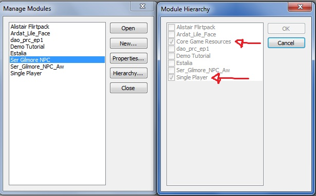
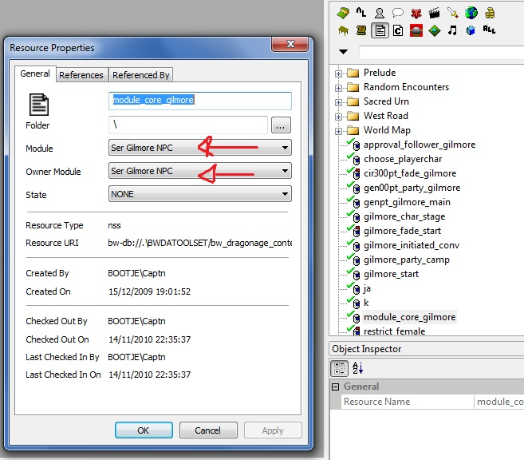

Compatibility/ru
DAO has an active modding community. Over time, players will accumulate many new campaigns and game mods. So, as a courtesy to players and other builders, it's helpful to try to make our mods mutually compatible.
From time to time, Bioware may well issue new releases, so it's good to reduce the risk of conflict in that respect, too.
Since we can't be sure that all authors will respect compatibility considerations, the emphasis here is on techniques that reduce the risk of conflict, regardless of what other people do (though not all are foolproof).
Obviously, there are some conflicts with no win-win (hurlocks can't be both green and purple at the same time), but that doesn't stop us trying to avoid unnecessary win-lose or corruption.
We begin with a concrete example - a tutorial on script conflict in OC mods, which is one of the most common problems to avoid. The remainder of the page is a more systematic discussion, which applies to both OC mods and custom campaigns.
Contents
- 1 Tutorial to ensure your Awakening mod will not break Origins and vice versa!!! (includes screenshots and script code)
- 2 Disable Add-Ins : Suggested Disclaimer
- 3 Module Scope
- 4 Resource Scope
- 5 Resource Conflict
- 6 Existing Content Modification
- 7 2DA Conflict
- 8 String Conflict
- 9 Event Handling Conflict
- 10 Plot Property
- 11 Open Source
- 12 Official DLC conflicts
- 13 FAQ
Tutorial to ensure your Awakening mod will not break Origins and vice versa!!! (includes screenshots and script code)
I'm hoping to save my modding friends some time. (Tutorial by Immortality)
Remember: IT'S YOUR RESPONSIBILITY TO ENSURE YOUR MOD DOES NOT BREAK THE GAME, THE EXPANSION, DLCS, OR OTHER MODS!!
The problem:
- While working in my Origins mod, and then on my Awakening mod, I realized that my Origins mod was breaking Awakening (scripts were not triggering, and even objects were moving around!).
- In the same way, my mod for Awakening was interfeering in Origins, breaking it (wrong scripts triggering, destroying the party recruiting).
The objective:
- Prevent the Origins mod to interfere with Awakening. If your mod is for Origins, it should only work in Origins.
- Prevent the Awakening mod to interfere with Origins. If your mod is for Awakening, it should only work in Awakening.
- If you have one mod for both, to ensure that the Origins part triggers in Origins and Awakening part in Awakening.
Procedure:
1- Ensure your Origins mod is for Origins only!
NEVER EVER EVER set your core scripts or handling scripts as Core Game Resources. NEVER!
There's absolutely no need for your scripts (especially your module core) to be a core game resource.
This means that whenever you create a mod for origins you should always set the properties of your major handling scripts as "Module: your module", and "Owner Module: your module". NEVER as a core game resource. Otherwise they will interfere with awakening and will break it (make no mistake, they will).
Example:
This is how you set your Origins module: 
{kind=link}
This is how you set all your script's properties: 
{kind=link}
2- Ensure your Awakening mod is for Awakening only!
Things are different for Awakening because you DO have to set all your materials' properties as "Module: Core Game Resources", and "Owner Module: your module". (read the tutorial if you need to know more: http://social.bioware.com/53295/blog/10858/ )
This means that your Awakening mod will interfere with Origins and will break the game.
Use IsUsingEP1Resources() [returns TRUE or FALSE] as the preferred method of ensuring your scripts apply to the correct campaign. Origins code itself has a lot of code that was written for Awakening and in all cases, Bioware uses this function to check if Awakening is being used or not.
Addendum: If you have copy-pasted scripts, for example your follower join script, it can still mess your Origins mod, even with the checks implemented!!!
In order to avoid this, you can rename your functions. For example, if your Origins script has the function "SetFollowerInParty", then rename the function in your Awakening script to "SetFollowerInParty_awakening", and etc.
Disable Add-Ins : Suggested Disclaimer
If the player disables all other add-ins on the in game DLC screen, no conflict should occur between them. Tedious, but effective.
This should rarely be necessary if the compatibility guidelines listed here are observed.
Exception : there is a toolset bug which produces content that persists in game, even when the add-in is disabled, unless the builder cleans it out before making the Builder-to-Player file. The same problem can occur if a builder has intentionally placed content in the packages\override folder (which should normally be avoided, as it is very rarely necessary).
Mod authors can work together to set player expectations in this respect. For example, the installation instructions might say
Reasonable steps have been taken to make this mod compatible. Obviously, the author has no control over the quality of other mods you may have installed. So, to reduce the risk of conflict, you are are strongly advised to move all files out of your packages\override folders, and consider disabling unnecessary community mods on your in-game DLC screen, before playing.
Module Scope
Setting the Extended Module in Module properties to "Core Game Resources" means that the add-in will change every campaign in game. If that's not intended, select the campaign you're trying to extend e.g. Single Player for the official campaign, (None) for a new standalone campaign.
What if my mod extends both Single Player and Awakening?
Resource Scope
By default, the toolset exports design resources to your addin's module override folder. That's a good thing, because it ensures that the scope of the resources is confined to your addin (and any that extend it). There's less risk of corrupting other people's work that way.
Never put resources in the packages folder, because that impacts every campaign. Also, once a player has installed resources there, they persist, even when your add-in is disabled. There are currently no resources known which need to be in the packages folder in order to work.
Normally, it's not a good idea to make new core resources. It's easy to make a new core resource accidentally when duplicating an official core resource, because the Owner Module defaults to core. This isn't obvious, but the resource will export to your addin's core override folder. Exception : items cannot be imported to a new campaign with the player character unless the template is included in both campaigns. One way of doing that is to make it a core resource.
Art resources posted to local are always sent to the module's core override folder. Fortunately, the core override folder only affects the campaign extended (if any), the addin and any that extend it. Most of those resources can, and should be, moved to the module folder and still work. The only exceptions are resources intended to overwrite a core game resouce.
There are a large number of mods available that use the packages folder, creating headaches for other modders and players since such overwrites cannot be turned off in the game GUI. This technique is deprecated - mods should be distributed in the approved .dazip format without using the packages folder. See also Suggested Disclaimer.
Resource Conflict
Resource names need to be unique within type. For example, genpt_party.plt and genpt_party.nss are different resources, becasue the type is different. However, if two modules both have resources called genpt_party.plt, only one will load in game, following the Source directory priorities.
Within the toolset database, duplicate resource names are forbidden, but there's nothing to stop different builders making resources which accidentally conflict, so it's wise to choose a unique range of names. Each builder can register the prefix they require. See Resource Naming Convention and especially Prefixes in use.
It is possible to override a core resource intentionally, by editing a copy, exporting it, and renaming it in the export folder to the same name as the original. However, almost invariably there is a cleaner way of doing this - for example, by changing the 2DA which identifies which resource to use.
Existing Content Modification
When adding new content or content hooks to existing areas, do not modify the area directly and deploy the modified area as an override with your mod. This is incompatible with other mods trying to edit the same area since only one modified version of the area will "win", and changes made by other mods to that area will not be available. Instead, use the PRCSCR system to add new content to existing areas.
2DA Conflict
Conflict between 2DA mods can be reduced using the M2DA mechanism and reserving ID ranges.
2DA mods should normally be placed in the add-in's module folder. Exception : if they are meant to be universally applied to all campaigns, they should be in the addin/core/override folder. The packages override folder should normally be avoided (because that removes control from the player, by forcing the 2DA to load even if the player has disabled the add-in).
String Conflict
When a new module is created, its properties include a String ID range which starts at a very large random number. This makes it very unlikely that text created by one add-in will override another.
See String ID main article for a discussion of how this impacts sharing between Builders.
The String editor article discusses techniques for editing strings which are outside of the module's normal range. It is not normally necessary to customise core strings directly, but if there is no alternative, change the Owner Module to the current module, and the Table to the current module's talk table. Otherwise, the custom string will override all campaigns.
Event Handling Conflict
Bear in mind that an add-in which impacts all campaigns could have undesirable consequences if it changes scripts or event-handling, given that custom campaigns may well have made changes of their own. If in doubt, consider modding the Single Player campaign only.
See event override for recommended methods of intercepting events.
Note that script resources are never overwritten in these methods. Conceptually, the event is intercepted by a custom script, then passed on (unless the event has been handled successfully and further processing would be harmful). In this way, mods try not to interfere unnecessarily with other scripts.
Given the variety of actions that can be taken in a script, and that fact that one mod can't know what other mods are trying to do, we can't guarantee that this approach will be entirely free of logical problems, but the Perfect is the enemy of the Good.
The simplest and safest method is to assign a custom event script to a resource. This is likely to be used by custom campaigns, and also by Single Player mods to specific resources, as it is the approach that Bioware devs have often recommended.
Mods which aim to impact all campaigns globally are better advised to use the second method, i.e. overriding event handling using an Events M2DA. As illustrated in the example script, if possible the event should be passed on to the default handler of the event's target object (which might be a custom event script). In this way, a global mod can be compatible with custom campaigns and specific resource mods.
Unfortunately, if two mods simply try to override the same event with an M2DA, they will be incompatible.
The best solution to override, partially override, or just listen for events via M2DA at this point would be to use a system such as Event Manager, though to ensure compatibility all modules overriding or listening for events should also be using the same system.
In the case of modules trying to totally override an event, only one module that does so will ultimately "win" (no such modules can ever truly be compatible with one another short of merging their functionality into one unified module as possible), but utilizing a system such as Event Manager will allow modules to partially override an event (i.e. only handle the event in certain situations), and will allow any module to listen for an event (without handling it) before or after the event is handled.
Plot Property
Scripts that impact all campaigns should respect the plot property on resources. For example, if a campaign author has flagged an NPC as plot, it might not be helpful to change the creature AI.
Open Source
If mod authors choose to publish their source code, with no restrictions on re-deployment, other builders can work around any residual incompatibilities (either by understanding the conflict more clearly, or by integrating the mod into their own work).
This technical wiki is not the place to discuss any legal or ethical considerations.
Official DLC conflicts
There is a bug report which gives the latest information on known conflicts between official DLC and standalone campaigns.
FAQ
What if my mod extends both Single Player and Awakening?
Just create two dazips for your module. Name one yourprefix_yourmodule_version and the other yourprefix_yourmodule_EP1_version.
Edit the Manifest.xml file inside yourprefix_yourmodule_EP_1_version.dazip. Change the line
<AddInItem UID="yourprefix_yourmodule" Name="Your Module Name" ExtendedModuleUID="Single Player" Priority="100" Enabled="1" State="2" Format="1"> to
<AddInItem UID="yourprefix_yourmodule_EP_1" Name="Your Module Name" ExtendedModuleUID="DAO_PRC_EP_1" Priority="200" Enabled="1" State="2" Format="1">
See also Discussion
How can I import an item with my existing character to a new campaign?
The Awakening expansion allows an existing character to be imported from one campaign to another.
There are two methods of ensuring that an item in the player's inventory is imported successfully:
- Make the item a core resource
- Include the item template in separate add-ins to both campaigns (see Awakening example above)
How can I stop items being imported into my campaign?
Assuming your campaign allows existing characters to be imported during Character Generation, you might want to clear the player's inventory before adding your starting equipment. Imported equipment might upset the balance of your campaign.
If you decide to do this, it's a good idea to warn players, so that they understand what's happening.